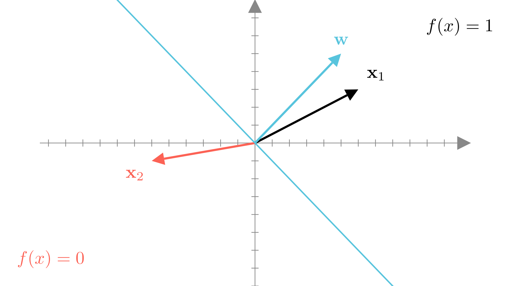

Manim Community v0.18.1

Interactive visualization for this lecture available here
In the last lecture we considered approximating functions of the form:
\[ y=f(\mathbf{x}), \quad \text{Input: } \mathbf{x} \in\mathbb{R}^n \longrightarrow \text{ Output: }y \in\mathbb{R} \]
In that setup our function takes in a vector and produces a real number as an output (for example a miles per gallon rating).
In many real-world problems, the output we want to model is not a continuous value, but a categorical value, meaning the function produces one choice from an unordered of possible outputs. A well-studied example of this kind of prediction is labeling; we might want to assign a label to an image based on the image’s content.

We call the prediction of categorical outputs classification. The output is often also called the class of the observation.
In the simplest binary case our function produces one of two possible outputs.
For example: consider the problem of labeling images as containing either cats or dogs. Conceptually we would like a function that maps images to either a cat label or a dog label:

For convenience and generality, we will typically use the set \(\{0, 1\}\) to denote the possible outputs for a binary classification function. Therefore in general we are considering functions of the form:
\[ y=f(\mathbf{x}), \quad \text{Input: } \mathbf{x} \in\mathbb{R}^n \longrightarrow \text{ Output: }y \in \{0, 1\} \]
We can assign these outputs to correspond to our actual target labels. For instance we might say that \(0 = \textbf{"cat"}\) and \(1=\textbf{"dog"}\).
As a simpler example, let’s again consider the fuel efficiency example from the previous lecture. Perhaps our company has set a target fuel efficiency of 30 miles per gallon for our new model and we want to predict whether our design will meet that target. In this case our inputs will be the same as before, but our output will become a binary label:
\[ \text{Input: } \mathbf{x}_i= \begin{bmatrix} \text{Weight} \\ \text{Horsepower} \\ \text{Displacement} \\ \text{0-60mph} \end{bmatrix}, \quad \text{Output: } y_i = \begin{cases} 1: \text{Meets target } (MPG \geq 30) \\ 0: \text{Fails to meet target } (MPG < 30) \\ \end{cases} \]
We can visualize which observations meet our target efficiency by again plotting weight against MPG and using colors to distinguish observations would have label \(1\) vs. label \(0\).
Manim Community v0.18.1
With this new output definition our dataset will look like:
\[ \text{Honda Accord: } \begin{bmatrix} \text{Weight:} & \text{2500 lbs} \\ \text{Horsepower:} & \text{ 123 HP} \\ \text{Displacement:} & \text{ 2.4 L} \\ \text{0-60mph:} & \text{ 7.8 Sec} \end{bmatrix} \longrightarrow \text{1 (Meets target)} \]
\[ \text{Dodge Aspen: } \begin{bmatrix} \text{Weight:} & \text{3800 lbs} \\ \text{Horsepower:} & \text{ 155 HP} \\ \text{Displacement:} & \text{ 3.2 L} \\ \text{0-60mph:} & \text{ 6.8 Sec} \end{bmatrix} \longrightarrow \text{0 (Does not meet target)} \]
\[ \vdots \quad \vdots \]
In this case, we’ve gotten rid of the \(MPG\) output variable and replaced it with a binary output \(y_i \in \{0, 1\}\). If we plot this version of the data, we can see more directly how this classification task differs from the regression task we saw in the last lecture.
Manim Community v0.18.1
We could fit a linear regression model to our binary data, by simply treating the labels \(0\) and \(1\) as real-valued outputs. For our fuel economy example, such a model would look like this:
Manim Community v0.18.1
However, this doesn’t really address our problem. How do we interpret a prediction of \(-1\) or \(10\) or \(0.5\)?
A more suitable prediction function would only output one of our two possible labels \(\{0, 1\}\). Fortunately, we can adapt our linear regression function in this way by defining a cutoff (typically 0), as follows:
\[ f(\mathbf{x})=\mathbf{x}^T\mathbf{w} \quad \longrightarrow \quad f(\mathbf{x})=\begin{cases} 1\ \text{ if }\ \mathbf{x}^T\mathbf{w} \geq 0 \\ 0\ \text{ if }\ \mathbf{x}^T\mathbf{w} < 0\end{cases} \]
We might also write this as:
\[ f(\mathbf{x}) = \mathbb{I}(\mathbf{x}^T\mathbf{w} \geq 0) \]
Where \(\mathbb{I}\) is an indicator function that is \(1\) if the boolean expression is true and \(0\) otherwise.
This gives us a prediction function that looks like step function in 1 dimension:
Manim Community v0.18.1

For our efficiency example, the binary prediction function can be written as:
\[ \text{Meets target} = f(\mathbf{x})= \]
\[ \big((\text{weight})w_1 + (\text{horsepower})w_2 + (\text{displacement})w_3 + (\text{0-60mph})w_4 + b\big) \geq 0 \]
Or in matrix notation:
\[ f(\mathbf{x})= \left( \begin{bmatrix} \text{Weight} \\ \text{Horsepower} \\ \text{Displacement} \\ \text{0-60mph} \\ 1 \end{bmatrix} \cdot \begin{bmatrix} w_1 \\ w_2\\ w_3 \\ w_4\\ b\end{bmatrix} \geq 0\right) \]
In this form we can see that the sign of each weight parameter determines whether the corresponding feature is more predictive of label \(1\) or \(0\) and to what extent. For instance, large positive weights indicate features that are very predictive of \(1\).
Our binary prediction function also has a geometric interpretation if we think of \(\mathbf{w}\) and \(\mathbf{x}\) as vectors. Reall that the dot product between the vectors \(\mathbf{x}\) and \(\mathbf{w}\) can be written as:
\[ \mathbf{x}^T\mathbf{w} = ||\mathbf{x}||_2 ||\mathbf{w}||_2 \cos \theta \]
Where \(\theta\) is the angle between the two vectors. If the angle between \(\mathbf{w}\) and \(\mathbf{x}\) is in the range \([-\frac{\pi}{2}, \frac{\pi}{2}]\) (or \([-90^o, 90^o]\) in degrees), then the prediction will be \(1\), otherwise it will be 0.
Manim Community v0.18.1

The blue line in the figure above is the set of points such that:
\[ \mathbf{x}^T \mathbf{w} = 0 \]
thus it represents the boundary between the regions where \(1\) and \(0\) predictions are made. By definition, it is perpendicular to the direction of \(\mathbf{w}\).
We can visualize a classification dataset as a function of two variables using color to distinguish between observations with each label. In this example we’ll look at weight and engine displacement.
Manim Community v0.18.1

For a binary classification model the decision boundary is the border between regions of the input space corresponding to each prediction that we saw in the previous section. For a linear classification model the decision boundary is line or plane:
\[\mathbf{x}^T\mathbf{w}=0\]
Here we’ll plot the decision boundary in the input space and color code observations by the predicted label.
Manim Community v0.18.1

A natural measure for error for binary classifiers is accuracy. The accuracy of a prediction function is the fraction of observations where the prediction matches the true output:
\[ \textbf{Accuracy: }\quad \frac{\text{\# of correct predictions}}{\text{Total predictions}} \]
We can write this in terms of our prediction function as:
\[ \textbf{Accuracy} = \frac{1}{N} \sum_{i=1}^N \mathbb{I}\big(f(\mathbf{x}_i) = y_i\big) \]
Below we can plot the decision boundary compared to the true outputs and calculate the accuracy of our predictions.
Accuracy: 0.8291Manim Community v0.18.1
In the last lecture we saw that we can find an optimal choice of parameters \(\mathbf{w}\) for a linear regression model by defining a measure of error or loss for our approximation on our dataset and minimizing that error as a function of \(\mathbf{w}\), either directly or with gradient descent.
\[ \mathbf{w}^* = \underset{\mathbf{w}}{\text{argmin}} \ \mathbf{Loss}(\mathbf{w}) \]
Gradient descent update:
\[ \mathbf{w}^{(k+1)} \quad \longleftarrow \quad \mathbf{w}^{(k)} - \alpha \nabla_{\mathbf{w}} \mathbf{Loss}(\mathbf{w}) \]
We might consider using (negative) accuracy as a loss function or the same mean squared error that we used for linear regression. However, if we tried to minimize one of these losses with gradient descent, we would run into a fundamental problem: the derivative of the indicator function is always \(0\), meaning gradient descent will never update our model.
To get around this problem, we need to turn back to our maximum likelihood estimation approach.
The Bernoulli distribution is a probability distribution over two possible outcomes. It is often thought of as the distribution of a coin flip, where the probability of heads is defined by a parameter \(q\) in the range \([0,1]\).
\[ \text{Probability of }\textbf{heads: } \ \ q, \quad \text{Probability of }\textbf{tails: } 1-q \]
Again we typically use \(0\) and \(1\) to denote the two possible outcomes, so we can write the probability mass function (or likelihood) of the Bernoulli distribution as:
\[ p(y)=\begin{cases} q\quad\ \ \ \ \ \ \ \text{if }\ y=1\\ 1-q\quad \text{if }\ y=0\\ \end{cases}\quad q\in[0,1],\ y\in\{0, 1\} \]
Using the fact that \(y\) can only be \(0\) or \(1\), we can write this more compactly as:
\[ p(y) = q^y(1-q)^{1-y} \]
Recall that the probability mass function tells us the probability of any outcome under our distribution. We can write the log probability mass function as:
\[ \log p(y) = y\log q + (1-y)\log(1-q) \]
In the previous lecture we saw that we could define a probabilistic model for outcomes given inputs by making an strong assumption about how the observed outputs were generated. In particular, we assumed that each \(y_i\) was sampled from a Normal distribution where the mean was a linear function of the input \(\mathbf{x}_i\).
\[ y_i \sim \mathcal{N}(\mathbf{x}_i^T\mathbf{w},\ \sigma^2) \]
Given everything we’ve seen, we might want to do the same for binary outputs by defining a probabilistic model where each binary label $y$_i$ is drawn from a Bernoulli where \(q\) is a linear function of \(\mathbf{x}_i\). Unfortunately \(q\) needs to be restricted to the interval \([0,1]\) and a linear function can make no such guarantee about its output.
\[ \mathbf{x}^T\mathbf{w}\notin [0, 1] \quad \longrightarrow \quad y_i \sim \mathbf{Bernoulli}(\mathbf{ q=? })\quad \]
However, if we had a way to map the outputs of our linear function into the range \([0,1]\), we could define such a model. This means we need a function of the form:
\[ \textbf{Need }\ g(x):\ \mathbb{R} \longrightarrow [0,1] \]
\[ \textbf{Input: } x \in \mathbb{R} \longrightarrow \textbf{Output: } y \in [0,1] \]
The sigmoid (or logistic) function is exactly such a function.
\[ \sigma(x) = \frac{1}{1+e^{-x}} \]
Manim Community v0.18.1
This “S”-shaped function squashes any real number into the range \([0,1]\). The sigmoid function has a number of other nice properties. It is smooth, monotonic and differentiable. It’s derivative has a convenient form that can be written in terms of the sigmoid function itself.
\[ \frac{d}{dx}\sigma(x) = \sigma(x)\big(1-\sigma(x)\big) \]
Manim Community v0.18.1
It’s particularly useful for modeling probabilities because:
\[ \sigma(0) = 0.5 \]
and
\[ 1-\sigma(x) = \sigma(-x) \]
With the sigmoid as our mapping function, we can now define our linear probabilistic model for binary classification as:
\[ y_i \sim \mathbf{Bernoulli}\big(\mathbf{ \sigma(\mathbf{x}_i^T\mathbf{w} })\big) \]
Using this definition, we can easily write out the probability of each output given the input \((\mathbf{x}_i)\) and model parameters \((\mathbf{w})\).
\[ p(y_i = 1\mid \mathbf{x}_i, \mathbf{w}) = \sigma(\mathbf{x}_i^T\mathbf{w}), \quad p(y_i=0\mid \mathbf{x}_i, \mathbf{w})=1-\sigma(\mathbf{x}_i^T\mathbf{w})=\sigma(-\mathbf{x}_i^T\mathbf{w}) \]
For our fuel efficiency example, we can plot the predicted probability that our target is met, \(p(y=1\mid \mathbf{x}, \mathbf{w})\) under our model as a function of the input (in this case weight). We see that the result is again an s-curve.
Manim Community v0.18.1
We call this probabilistic model for binary outputs: logistic regression.
When we’re making predictions we typically don’t want to sample an output, we want to make a definite prediction. In this case either \(0\) or \(1\). A reasonable way to do this is to simply predict the output that is most likely under our model:
\[ \textbf{Prediction function: } f(\mathbf{x}) = \begin{cases}1 \ \text{if } p(y=1\mid\mathbf{x}, \mathbf{w}) \geq p(y=0\mid\mathbf{x}, \mathbf{w}) \\ 0 \text{ otherwise} \end{cases} \]
Since there’s only two possible outcomes, this is equivalent to checking if the probability of class \(1\) is greater than 50%. \[p(y=1\mid \mathbf{x}, \mathbf{w}) =\sigma(\mathbf{x}^T\mathbf{w})\geq 0.5\]
Since \(\sigma(0) =0.5\), we see that this is equivalent to the decision rule for classification we defined earlier!
\[ p(y_i=1)\geq 0.5 \quad \longrightarrow \quad \mathbf{x}^T\mathbf{w}\geq 0 \]
Now that we’ve setup our model, we can look at how to find the optimal \(\mathbf{w}\) using the principle of maximum likelihood estimation.
Manim Community v0.18.1
Recall that the maximum likelihood estimate of our parameter \(\mathbf{w}\) is the choice of \(\mathbf{w}\) that maximizes the (conditional) probability of the data we observed under our model
\[ \mathbf{w}^* = \underset{\mathbf{w}}{\text{argmax}} \ p(\mathbf{y} \mid \mathbf{X}, \mathbf{w}) =\underset{\mathbf{w}}{\text{argmax}} \ p(y_1,...,y_N \mid \mathbf{x}_1, ...,\mathbf{x}_N, \mathbf{w}) \]
Again, our model also assumes conditional independence across observations so:
\[ p(y_1,...,y_N \mid \mathbf{x}_1, ...,\mathbf{x}_N, \mathbf{w}) = \prod_{i=1}^N p(y_i\mid \mathbf{x}_i, \mathbf{w}) \]
For convenience, it is typical to frame the optimal value in terms of the negative log-likelihood rather than the likelihood, but the two are equivalent.
\[ \underset{\mathbf{w}}{\text{argmax}} \prod_{i=1}^N p(y_i\mid \mathbf{x}_i, \mathbf{w}) = \underset{\mathbf{w}}{\text{argmin}} - \sum_{i=1}^N \log p(y_i \mid \mathbf{x}_i, \mathbf{w}) = \textbf{NLL}(\mathbf{w}, \mathbf{X}, \mathbf{y}) \]
Thus, the negative log-likelihood is a natural loss function to optimize to find \(\mathbf{w}^*\).
\[ \textbf{Loss}(\mathbf{w}) =\textbf{NLL}(\mathbf{w}, \mathbf{X}, \mathbf{y})=- \sum_{i=1}^N \log p(y_i \mid \mathbf{x}_i, \mathbf{w}) \]
We can now write out the negative log-likelihood for our logistic regression model using the Bernoulli PMF we defined above
\[ \mathbf{NLL}(\mathbf{w}, \mathbf{X}, \mathbf{y}) = -\sum_{i=1}^N \bigg[ y_i\log \sigma(\mathbf{x}_i^T\mathbf{w}) + (1-y_i)\log(1-\sigma(\mathbf{x}_i^T\mathbf{w})) \bigg] \]
Using our knowledge of the sigmoid function, we can write this even more compactly:
\[ \mathbf{NLL}(\mathbf{w}, \mathbf{X}, \mathbf{y}) =-\sum_{i=1}^N \bigg[ y_i\log \sigma(\mathbf{x}_i^T\mathbf{w}) + (1-y_i)\log \sigma(-\mathbf{x}_i^T\mathbf{w}) \bigg] \]
\[ = -\sum_{i=1}^N \log\sigma\big((2y_i-1)\mathbf{x}_i^T\mathbf{w}\big) \]
Note that \(2y_i-1\) is \(1\) if \(y_i=1\) and is \(-1\) if \(y_i=0\).
For our logistic regression model, maximum likelihood is intuitive. In the ideal case our model would always predict the correct class with probability 1.
\[ \textbf{Best case scenerio: } p(y_i\mid \mathbf{x}_i, \mathbf{w})=1, \quad \forall i \in \{1,...,N\} \]
This is generally not possible though due to the constraints of our linear function.
We can also write the negative log-likelihood compactly using matrix-vector notation.
\[ \mathbf{NLL}(\mathbf{w}, \mathbf{X}, \mathbf{y}) = -\mathbf{y}^T\log \sigma(\mathbf{X}\mathbf{w}) - (1-\mathbf{y})^T\log \sigma(-\mathbf{X}\mathbf{w}) \]
It’s worth noting that in neural network literature, this loss is often called the binary cross-entropy loss.
As we saw with linear regression, we can find the optimal paramters \(\mathbf{w}^*\) under this loss function using gradient descent:
\[
\mathbf{w}^{(i+1)} \leftarrow \mathbf{w}^{(i)} - \alpha \nabla_{\mathbf{w}} \mathbf{NLL}(\mathbf{w}^{(i)}, \mathbf{X}, \mathbf{y})
\]
To use this, we first need to derive the gradient of the negative log-likelihood with respect to \(\mathbf{w}\). We’ll start by writing out the simplest version of the NLL that we saw above:
\[ \mathbf{NLL}(\mathbf{w}, \mathbf{X}, \mathbf{y}) = -\sum_{i=1}^N \log\sigma\big((2y_i-1)\mathbf{x}_i^T\mathbf{w}\big) \]
\[ \nabla_{\mathbf{w}}\mathbf{NLL}(\mathbf{w}, \mathbf{X}, \mathbf{y}) = \frac{d}{d\mathbf{w}}-\sum_{i=1}^N \log\sigma\big((2y_i-1)\mathbf{x}_i^T\mathbf{w}\big) \]
As a first step, recall that the addition rule tells us that the derivative of a sum is a sum of derivatives:
\[ = -\sum_{i=1}^N \frac{d}{d\mathbf{w}} \log\sigma\big((2y_i-1)\mathbf{x}_i^T\mathbf{w}\big) \]
Next we’ll apply the chain rule to the \(\log\) function, remembering that \(\frac{d}{dx} \log x = \frac{1}{x}\):
\[ = -\sum_{i=1}^N \bigg(\frac{1}{ \sigma\big((2y_i-1)\mathbf{x}_i^T\mathbf{w}\big) }\bigg)\frac{d}{d\mathbf{w}} \sigma\big((2y_i-1)\mathbf{x}_i^T\mathbf{w}\big) \]
Then we can apply the chain rule to the sigmoid function, using the fact that \(\frac{d}{dx} \sigma(x)=\sigma(x)(1-\sigma(x))\):
\[ = -\sum_{i=1}^N \bigg(\frac{1}{ \sigma\big((2y_i-1)\mathbf{x}_i^T\mathbf{w}\big) } \bigg) \bigg(\sigma\big((2y_i-1)\mathbf{x}_i^T\mathbf{w}\big)\bigg) \bigg(1-\sigma\big((2y_i-1)\mathbf{x}_i^T\mathbf{w}\big) \bigg) \frac{d}{d\mathbf{w}}\big((2y_i-1)\mathbf{x}_i^T\mathbf{w}\big) \]
We now see that the first 2 terms cancel!
\[ = -\sum_{i=1}^N \bigg(1-\sigma\big((2y_i-1)\mathbf{x}_i^T\mathbf{w}\big) \bigg) \frac{d}{d\mathbf{w}}\big((2y_i-1)\mathbf{x}_i^T\mathbf{w}\big) \]
Finally we’re left with the gradient of a linear function, which is just:
\[\frac{d}{d\mathbf{w}}\big((2y_i-1)\mathbf{x}_i^T\mathbf{w}\big)=(2y_i-1)\mathbf{x}_i\]
Note that the transpose is irrelevant as we’re no longer signifying a dot-product and \(\mathbf{x}_i\) is just a vector. So finally we’re left with
\[ \nabla_{\mathbf{w}}\mathbf{NLL}(\mathbf{w}, \mathbf{X}, \mathbf{y}) = -\sum_{i=1}^N \bigg(1-\sigma\big((2y_i-1)\mathbf{x}_i^T\mathbf{w}\big) \bigg) \bigg((2y_i-1)\mathbf{x}_i \bigg) \]
Let’s look at how this loss function compares to the mean squared error loss we derived for logistic regression. One way to do this is to visualize the loss for a single observation as a function of the output of \(\mathbf{x}^T\mathbf{w}\). Here we’ll look at the loss for different models trying to predict an output of \(y=0\):
\[ \textbf{Let: }\ y=0, \quad z=\mathbf{x}^T\mathbf{w} \]
Manim Community v0.18.1
We see that the squared error loss is best when the output is exactly 0, while the logistic regression NLL wants the output of \(\mathbf{x}^T\mathbf{w}\) to be a negative as possible so that \(p(y=0\mid \mathbf{x}, \mathbf{w}) \longrightarrow 1\). Meanwhile the “accuracy” loss has no slope, making it impossible to optimize with gradient descent.
We’ve now seen a useful model for binary classification, but in many cases we want to predict between many different classes.
We will typically use a set of integers \(\{1, 2,...,C\}\) to denote the possible outputs for a general categorical function. Therefore we are considering functions of the form:
\[ y=f(\mathbf{x}), \quad \text{Input: } \mathbf{x} \in\mathbb{R}^n \longrightarrow \text{ Output: }y \in \{1, 2, ...,C\} \]
It’s important to note that we do not want to assume that the ordering of labels is meaningful. For instance if we’re classifying images of animals we might set the labels such that:
\[ \textbf{1: Cat},\quad \textbf{2: Dog},\quad \textbf{3: Mouse} \]
But this shouldn’t lead to different results to the case where we assign the labels as:
\[ \textbf{1: Dog},\quad \textbf{2: Mouse},\quad \textbf{3: Cat} \]
We call prediction of a categorical output with more than two possibilities multi-class classification.
A symmetric approach to defining a prediction function for multi-class classification is to define a separate linear function for each class and choose the class whose function gives the largest output.
If \(C\) is the number of possible classes, we will therefore have \(C\) different parameter vectors \(\mathbf{w}_1,…,\mathbf{w}_C\) and our prediction function will be defined as:
\[ f(\mathbf{x}) = \underset{c\in\{1...C\}}{\text{argmax}}\ \mathbf{x}^T\mathbf{w}_c \]
For convenience, we can also define a matrix that contains all \(C\) parameter vectors:
\[ \mathbf{W} = \begin{bmatrix} \mathbf{w}_1^T \\ \mathbf{w}_2^T \\ \vdots \\ \mathbf{w}_C^T\end{bmatrix} = \begin{bmatrix} W_{11} & W_{12} & \dots & W_{1d} \\ W_{21} & W_{22} & \dots & W_{2d} \\ \vdots & \vdots & \ddots & \vdots\\ W_{C1} & W_{C2} & \dots & W_{Cd} \end{bmatrix} \]
With this notation, our prediction function becomes:
\[ f(\mathbf{x}) = \underset{c\in\{1...C\}}{\text{argmax}}\ (\mathbf{x}^T\mathbf{W}^T)_c, \quad \mathbf{W} \in \mathbb{R}^{C\times d} \]
If we only have two classes \(0\) and \(1\), so \(C=2\), then this multi-class prediction function reduces to the same as our binary prediction function. We can see this by noting that \(x > y \equiv x-y>0\):
\[ f(\mathbf{x}) = \underset{c\in\{0,1\}}{\text{argmax}}\ (\mathbf{x}^T\mathbf{W}^T)_c = \mathbb{I}(\mathbf{x}^T\mathbf{w}_1 - \mathbf{x}^T\mathbf{w}_0 \geq 0) \]
If we factor out \(\mathbf{x}\) we see that we can simply define a new parameter vector in order to get the same decision rule.
\[ =\mathbb{I}(\mathbf{x}^T(\mathbf{w}_1 - \mathbf{w}_0) \geq 0) \quad \longrightarrow \quad \mathbb{I}(\mathbf{x}^T\mathbf{w} \geq 0), \quad \mathbf{w}=\mathbf{w}_1-\mathbf{w}_0 \]
It follows that the decision boundary between any two classes is also linear! We can see this by plotting a prediction function. In this case for the Iris dataset we saw in the homework.
As a first step towards finding the optimal \(\mathbf{W}\) for a multi-class model, let’s look at a distribution over multiple discrete outcomes: the Categorical distribution.
A categorical distribution needs to define a probability for each possible output. We’ll use \(q_c\) to denote the probability of output \(c\).
\[ p(y=c) = q_c, \quad y\in \{1...C\} \]
We can then denote the vector of all \(C\) probabilities as \(\mathbf{q}\). Note that in order for this to be valid, every probability needs to be in the range \([0,1]\) and the total probability of all outcomes needs to be \(1\), so:
\[ \mathbf{q} \in \mathbb{R}^C\quad q_c \geq 0\ \forall c\in \{1...C\}\quad \sum_{c=1}^C q_c=1 \]
As with the Bernoulli distribution, we can write this in a more compact form. Here we see that the probability of a given outcome is simply the corresponding entry in \(\mathbf{q}\)
\[ p(y)=\prod q_c^{\mathbb{I}(y=c)} = q_y \]
Thus the log-probability is simply:
\[ \log p(y) = \sum_{c=1}^C \mathbb{I}(y=c)\log q_c = \log q_y \]
With the Categorical distribution defined, we can now ask if we can use it to define a linear probabilistic model for multi-class categorical outputs. As with our other models we’ll consider making the distribution parameter a linear function of our input.
\[ y_i\sim \mathbf{Categorical}(\mathbf{q}=?), \quad \mathbf{q}=\mathbf{x}_i^T\mathbf{W}^T? \]
However, we once again run into the issue that the output of our linear function likely won’t satisfy the conditions we need for the parameter of a categorical distribution. In particular, the output is not guaranteed to be positive or to sum to \(1\).
\[ \mathbf{x}^T\mathbf{W}^T\in \mathbb{R}^C,\quad q_c \ngeq 0\ \forall c\in \{1...C\}, \quad \sum_{c=1}^C q_c\neq1 \]
In this case we need a way to map arbitrary vectors to vectors that satisfy these conditions:
\[ \textbf{Need }\ f(\mathbf{x}):\ \mathbb{R}^C \longrightarrow [0,\infty)^C,\ \sum_{i=1}^Cf(\mathbf{x})_c = 1 \]
Such a mapping exists in the softmax function. This function maps vectors to positive vectors such that the entries sum to \(1\). Entry \(c\) of \(\text{softmax}(\mathbf{x})\) can be written as:
\[ \text{softmax}(\mathbf{x})_c = \frac{e^{x_c}}{\sum_{j=1}^Ce^{x_j}} \]
We can also define the softmax function using vector notation as:
\[ \text{softmax}(\mathbf{x}) = \begin{bmatrix}\frac{e^{x_1}}{\sum_{j=1}^Ce^{x_j}} \\ \frac{e^{x_2}}{\sum_{j=1}^Ce^{x_j}} \\ \vdots \\ \frac{e^{x_C}}{\sum_{j=1}^Ce^{x_j}} \end{bmatrix} \]
Intuitively, \(e^x\) is positive for any \(x\), while dividing by the sum ensure the entries sum to 1 as:
\[ \sum_{i=1}^C \frac{e^{x_i}}{\sum_{j=1}^Ce^{x_j}} = \frac{\sum_{i=1}^C e^{x_i}}{\sum_{j=1}^Ce^{x_j}} = 1 \]
The softmax function also has the nice property that
\[ \underset{c\in\{1,...,C\}}{\text{argmax}}\ \mathbf{x}_c = \underset{c\in\{1,...,C\}}{\text{argmax}}\ \text{softmax}(\mathbf{x})_c \]
With the softmax function we can now define our probabilistic model for categorical labels as:
\[ y_i\sim \mathbf{Categorical}\big(\text{softmax}(\mathbf{x}^T\mathbf{W})\big) \]
We see that under this assumption, the probability of a particular output \((c)\) is:
\[ p(y_i=c \mid \mathbf{x}, \mathbf{W}) = \text{softmax}(\mathbf{x}^T\mathbf{W})_c=\frac{e^{\mathbf{x}^T\mathbf{w}_c}}{\sum_{j=1}^Ce^{\mathbf{x}^T\mathbf{w}_j}} \]
We call this particular probabilistic model: multinomial logistic regression
We now have everything we need to define our negative log-likelihood loss for the multi-class classification model. Once again our loss is the negative sum of the log-probability of each observed output:
\[ \textbf{Loss}(\mathbf{W}) =\textbf{NLL}(\mathbf{W}, \mathbf{X}, \mathbf{y})=- \sum_{i=1}^N \log p(y_i \mid \mathbf{x}_i, \mathbf{W}) \]
Using the log-probability of the multinomial logistic regression model we get:
\[ \textbf{NLL}(\mathbf{W}, \mathbf{X}, \mathbf{y})= -\sum_{i=1}^N \log\ \text{softmax}(\mathbf{x}_i^T\mathbf{W}^T)_{y_i} = -\sum_{i=1}^N \log \frac{e^{\mathbf{x}_i^T\mathbf{w}_{y_i}}}{\sum_{j=1}^Ce^{\mathbf{x}_i^T\mathbf{w}_{j}}} \]
We can simplify this further to:
\[ \textbf{NLL}(\mathbf{W}, \mathbf{X}, \mathbf{y})=-\sum_{i=1}^N \bigg(\mathbf{x}_i^T\mathbf{w}_{y_i}- \log\sum_{j=1}^Ce^{\mathbf{x}_i^T\mathbf{w}_{j}}\bigg) \]
In this case our parameters are a matrix \(\mathbf{W}\). The concept of a gradient, extends naturally to a matrix; we simply define the gradient matrix such that each element is the partial derivative with respect to the corresponding element of the input. For the multinomial logistic regression loss, the gradient this looks like:
\[ \nabla_{\mathbf{W}} \mathbf{NLL}(\mathbf{W}, \mathbf{X}, \mathbf{y})= \begin{bmatrix} \frac{\partial \mathbf{NLL}}{\partial W_{11}} & \frac{\partial \mathbf{NLL}}{\partial W_{12}} & \dots & \frac{\partial \mathbf{NLL}}{\partial W_{1C}} \\ \frac{\partial \mathbf{NLL}}{\partial W_{21}} & \frac{\partial \mathbf{NLL}}{\partial W_{22}} & \dots & \frac{\partial \mathbf{NLL}}{\partial W_{2C}} \\ \vdots & \vdots & \ddots & \vdots\\ \frac{\partial \mathbf{NLL}}{\partial W_{d1}} & \frac{\partial \mathbf{NLL}}{\partial W_{d2}} & \dots & \frac{\partial \mathbf{NLL}}{\partial W_{dC}} \end{bmatrix} \]
We can still apply the same gradient descent updates in this case!
\[ \mathbf{W}^{(i+1)} \leftarrow \mathbf{W}^{(i)} - \alpha \nabla_{\mathbf{W}} \mathbf{NLL}(\mathbf{W}^{(i)}, \mathbf{X}, \mathbf{y}) \]